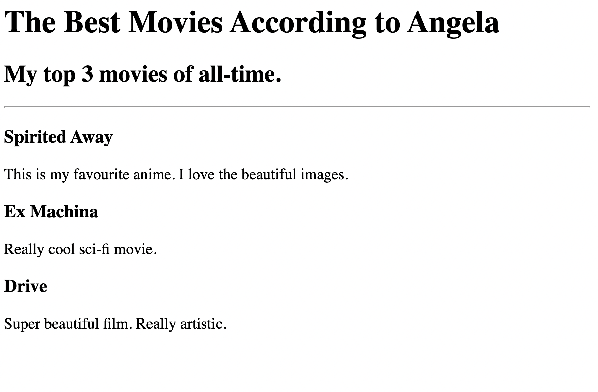

-
Birthday Invite Project
This project is about creating a Birthday party invitation through HTML language.

Birthday Invite Project link
-
Movie Ranking Project
This project is about a website which is a blog of movies which are favourites of my tutor and web development mentor Angela Wu

Movie Ranking Project link
More about me...